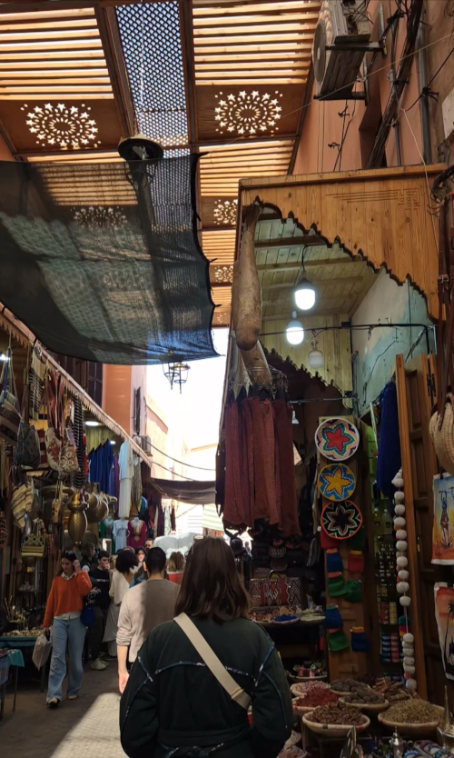
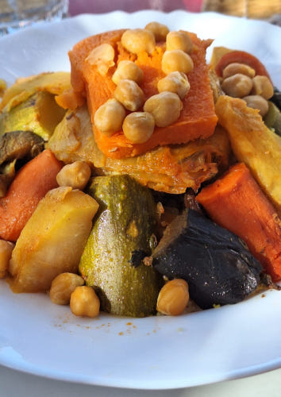
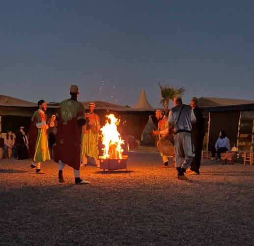
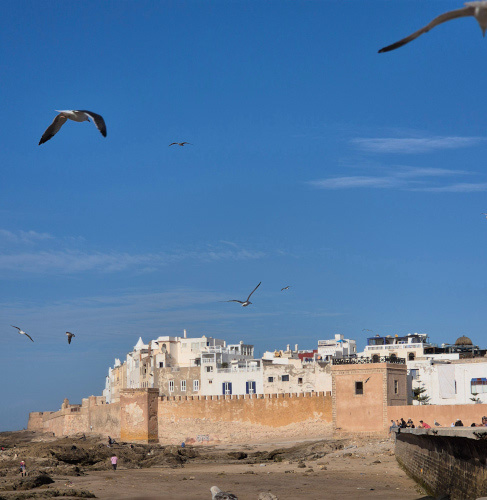
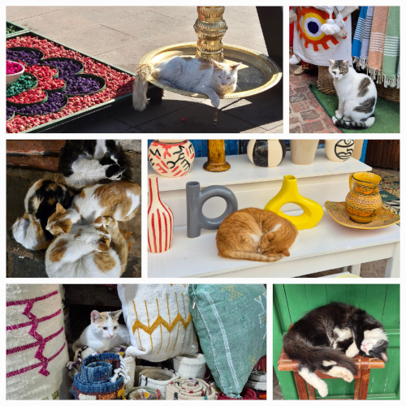
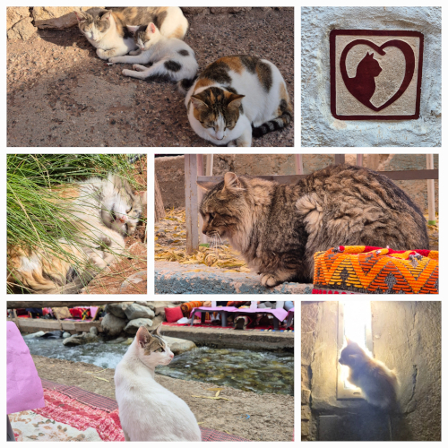

Pour Noël 2024, ma famille décida de passer les vacances au Maroc. Mon unique expérience du pays était à Dakhla pour une semaine de de kitesurf avec l'UCPA et j'en avais gardé un excellent souvenir.
Pour commencer nous avons passé quelques jours à Marrakech. Située au centre du pays, cette ville est idéale pour faire des virées aux alentours. Notre logement se trouvait dans un riad, maison typique construite autour d'une ouverture centrale. Dès le trajet depuis l'aéroport, le dépaysement est total : mobylettes roulant dans tous les sens (casque facultatif), chats et chiens errants sur les routes, présence de chevaux et d'ânes en plein centre ville...
La visite du souk le lendemain confirma cette ambiance de joyeux chaos. Ces minuscules ruelles pleines de marchands vendant tout et n'importe quoi sont une des attractions phares de la ville. Trop étroites pour laisser passer des voitures, on y trouve cependant de nombreuses mobylettes ou même des charrettes tirées à la main ou à dos d'âne. Il faut savoir s'écarter ! Sur les étalages : épices par sacs entiers, tapis, habits traditionnels, savons, t-shirts de foot, marques de luxe (faute d'orthographe optionnelle), sculptures, bijoux, coussins... Tout le monde parle français, ce qui est agréable pour un voyage à l'étranger. Les Marocains sont enjoués et prêts à tout pour vendre quelque chose (négocier fait partie du jeu). C'est assez drôle de se voir partager une blague spécifique à la région de France d'où l'on vient (Pourquoi les Bretons sont-ils tous frères et sœurs ? Parce qu'ils ont Quimper !) . À noter la place Jemaa el-Fnaa pour une ambiance unique : dompteurs de singes, charmeurs de serpents... et ambiance festive le soir.
Enfin, je tiens à souligner l'un de mes aspects préférés du Maroc : la nourriture ! Délicieux thé à la menthe, tajines et couscous partout ! Sans oublier les nombreuses déclinaisons de pains et autres crêpes.
Nous avons fait une petite excursion dans le désert d'Agafay, à seulement 45 minutes de Marrakech. Sur le chemin, petit arrêt à une coopérative d'huile d'argan. Celle-ci semble être un produit local phare, avec de nombreuses boutiques en proposant tout le long de notre voyage. L'huile d'argan possède de nombreuses vertus: cuisine, soin du visage, des cheveux, et j'en passe. Par la suite nous avons fait une balade à dos de dromadaire dans le désert. Cette expérience sympathique fut suivie d'un spectacle de danse traditionnelle et d'un dîner typique. Un très bon moment et une accalmie bienvenue de la ville et son ambiance à 1000 à l'heure.
Petit bémol : les détritus. Le plastique est hélas omniprésent sur le bord des routes.
Prochaine étape : la ville côtière d'Essaouira, située à 2h30 de Marrakech. J'en ai gardé un très bon souvenir. La médina (centre historique) a des rues plus larges et les commerçants sont moins agressifs. Le souk propose de nombreux produits similaires à Marrakech. Essaouira est une bonne destination pour les amateurs de poisson frais : tous les jours les bateaux de pêche rapportent une nouvelle cargaison. Les étalages du port permettent de choisir soi-même ses poissons, de les faire griller et de les manger sur place. Je recommande !
Essaouira c'est aussi son immense plage de sable fin. Nous avons pu nous baigner, bon plan pour échapper à l'hiver européen (non pas que je sois concerné à l'heure actuelle :)). Certains auto-entrepreneurs viennent même vendre du thé à la menthe ou des pâtisseries sur la plage ! Le lieu est aussi un spot de surf, kite, planche, etc, avec plusieurs écoles. Les conditions n'étaient pas au rendez-vous lors de notre bref passage mais j'ai pu constater l'excellent potentiel de cette immense baie sans vagues. Next time !
À noter également l'omniprésence du cash dans tout le Maroc, y compris pour le logement et la location de voiture. J'ai trouvé ce contraste intéressant par rapport au Cap, où tout peut se payer par carte bleue (voire exclusivement), y compris chez les petits commerçants.
Étape ultime de ce voyage : la montagne de l'Atlas (3h30 d'Essaouira). On peut en voir les sommets enneigés depuis Marrakech. Notre programme : randonnée le long d'une rivière et de ses 7 cascades. Après quelques frayeurs concernant la météo (pluie, voire neige annoncée) nous avons au final passé un super moment. Le départ au matin avec notre guide nous a permis d'éviter la foule. Le lieu est très touristique et de nombreux restaurants sont à même le cours d'eau ainsi que des petits commerces tout au long de la première partie de la balade. La suite est cependant beaucoup plus sauvage et nous étions seuls. Sur le chemin nous avons croisé une bande de macaques berbères, rencontre surprenante et amusante !
Pour finir le guide nous a emmené au restaurant de son cousin situé sur la rivière. Ce fut un repas bien mérité après cette randonnée de plusieurs heures.
Cette dernière escale a terminé de nous montrer la richesse et la diversité de la nature au Maroc : désert, ville, plage, montagne, tout le monde peut y trouver son compte !
Pour conclure, ce voyage s'est révélé très enrichissant. J'ai découvert le Maroc, pays rempli de contrastes et de fragrances. Les habitants locaux peuvent parfois se montrer sans vergogne autour des souks mais aussi très ouverts et bienveillants comme nos hôtes et guides. Par ailleurs nous ne nous sommes jamais sentis en insécurité (et plusieurs objets oubliés nous ont été restitués sans problème). La culture marocaine est vraiment unique et différente de tous les autres pays que j'ai visités auparavant. Sur ce, merci d'avoir lu jusqu'ici et à bientôt pour de nouvelles aventures.
PS: mention spéciale à l'incroyable quantité de chats qui fourmillent partout.
 